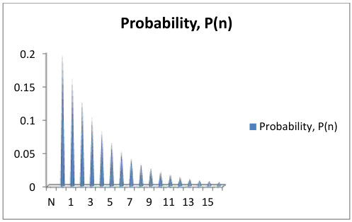
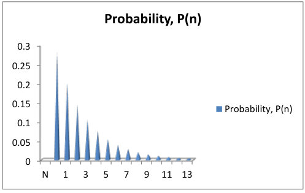
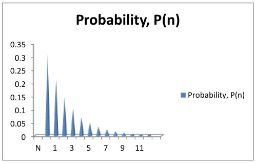

Arrivals vs. service capacity
ArrivalsCapacity
Morning has room for 7 more customers per hour. Afternoon and evening each have room for 5.
An interactive companion to Queueing Model in a Bank ATM by Sonia Kalra and Supriya. Explore why ATM visits take longer, how random arrivals build a line, and what happens as demand nears capacity.
In this example, four customers are in the system. Three are waiting, and one is using the ATM.
The authors collected data at one ATM over three weeks and analyzed morning, afternoon, and evening separately. The paper publishes per-hour rates for those periods. The waiting times below come from the queueing model.
Morning has room for 7 more customers per hour. Afternoon and evening each have room for 5.
Afternoon and evening both average 12 minutes in the system. Afternoon customers wait 1.35 minutes less on average and spend 1.35 minutes more using the ATM.
On an average evening, 3.20 customers are waiting and 0.80 are in service, for 4.00 in the system. The service count is a time average for a single ATM.
Evening arrivals have an 80% chance of finding the ATM busy. Under Poisson arrivals, this equals the share of time the ATM is busy.
Evening has the longest queue wait. Its 80% utilization is the highest of the three periods. The model gives a 9.60-minute mean wait and an average of 3.20 customers waiting. Morning has the shortest wait and the largest gap between demand and service capacity.
Afternoon has the lowest arrival rate. It also has the lowest service capacity. Since afternoon and evening each have a gap of five customers per hour, both have a 12-minute mean total visit under the model.
The first M describes Poisson arrivals, the second describes exponential service times, and 1 means one ATM. Within each period, the model treats arrivals and service as independent with constant rates.
A customer arrives while the ATM is busy. Their wait starts when they join the back of the line.
When the machine is free, an arrival goes straight into service. The model assumes unlimited queue capacity and an effectively unlimited source of customers.
Rates are customers per hour. The averages for the two exponential clocks are 60/λ minutes between arrivals and 60/μ minutes per transaction.
An arrival increases N by one at rate λ. When N is positive, a transaction finishes at rate μ and decreases N by one. For example, one arrival takes the system from N = 1 to N = 2, so the new customer waits. The next completion sends N back to 1 as the waiting customer starts service.
Steady state requires λ < μ. A smaller gap μ − λ produces a longer average visit, all else equal.
| Measure | Equation | Interpretation |
|---|---|---|
| ρ | λ/μ | Fraction of time the machine is busy |
| P₀ and P(N = n) | 1 − ρ and (1 − ρ)ρⁿ | Chance the system is empty or has exactly n customers, including the one in service |
| P(N ≤ n) | 1 − ρⁿ⁺¹ | Chance there are at most n customers in the system |
| Ls and Lq | λ/(μ − λ) and Ls − ρ | Mean customer count in the system and in the waiting line |
| Ws and Wq | 1/(μ − λ) and ρ/(μ − λ) | Mean time in the system and mean queue wait, both in hours |
| Little’s Law | Ls = λWs, Lq = λWq | Connects average customer counts to average time in each part of the queue |
The paper plots the probability of each system size for the three periods. Compare the full set of model curves, explore the cumulative probability, or try a wait threshold. See the published figures and tables.
Model extension: P(Wq > t) = ρ exp[−(μ − λ)t], with t in hours. At zero minutes this gives the chance of any positive wait.
System size N counts customers in service and waiting. For N ≥ 1, exactly N − 1 customers are waiting.
The original figures appear beside their published tables. Bars in the tables show how cumulative probability approaches 1. The Probability Explorer uses recalculated values.

Original figure · p. 506
An empty ATM is least likely in the evening (20%). As customer counts rise, the probabilities fall more slowly than in the morning or afternoon. Table 1 gives 0.9766 for 16 or fewer customers.
Published probabilities · p. 505
| n | Exactly n | At most n |
|---|---|---|
| 0 | 0.2 | 0.2 |
| 1 | 0.16 | 0.36 |
| 2 | 0.128 | 0.488 |
| 3 | 0.1024 | 0.5904 |
| 4 | 0.0819 | 0.6723 |
| 5 | 0.06554 | 0.738 |
| 6 | 0.05243 | 0.790 |
| 7 | 0.04194 | 0.832 |
| 8 | 0.03355 | 0.865 |
| 9 | 0.02684 | 0.892 |
| 10 | 0.02147 | 0.914 |
| 11 | 0.01718 | 0.931 |
| 12 | 0.01374 | 0.944 |
| 13 | 0.01099 | 0.955 |
| 14 | 0.008794 | 0.964 |
| 15 | 0.007035 | 0.9710 |
| 16 | 0.005628 | 0.9766 |

Original figure · p. 507
The ATM is empty 28% of the time in the paper’s model. Table 2 gives 0.988 for 13 or fewer customers, even though the chance of exactly 13 is just 0.0039.
Published probabilities · p. 507
| n | Exactly n | At most n |
|---|---|---|
| 0 | 0.28 | 0.28 |
| 1 | 0.201 | 0.481 |
| 2 | 0.145 | 0.626 |
| 3 | 0.104 | 0.73 |
| 4 | 0.0752 | 0.805 |
| 5 | 0.0541 | 0.859 |
| 6 | 0.0390 | 0.898 |
| 7 | 0.0281 | 0.926 |
| 8 | 0.0202 | 0.946 |
| 9 | 0.0146 | 0.961 |
| 10 | 0.0105 | 0.971 |
| 11 | 0.0075 | 0.979 |
| 12 | 0.0054 | 0.984 |
| 13 | 0.0039 | 0.988 |

Original figure · p. 508
Afternoon has the highest published probability of an empty system (31%). Table 3 gives 0.992 for 12 or fewer customers. Its probabilities use the paper’s rounded utilization.
Published probabilities · p. 508
| n | Exactly n | At most n |
|---|---|---|
| 0 | 0.31 | 0.31 |
| 1 | 0.214 | 0.524 |
| 2 | 0.148 | 0.672 |
| 3 | 0.102 | 0.774 |
| 4 | 0.0704 | 0.844 |
| 5 | 0.0486 | 0.893 |
| 6 | 0.0335 | 0.926 |
| 7 | 0.0231 | 0.949 |
| 8 | 0.0159 | 0.965 |
| 9 | 0.0110 | 0.977 |
| 10 | 0.0076 | 0.984 |
| 11 | 0.0052 | 0.989 |
| 12 | 0.0036 | 0.992 |
The ATM starts empty at time zero. Press Play to run the simulation or Step event to advance one arrival or departure at a time. Reset returns to time zero.
The trace rises when someone joins the line and falls when someone leaves the line to start service. Flat segments show the queue length holding steady between events.
The vertical gap counts everyone still in the system, including the customer using the ATM.
The simulation line starts after the first completed visit. It can stay above or below the model estimate during a short run.
The running mean uses completed visits only. A short run can differ from the steady-state estimate because the ATM starts empty and arrival and service times vary.
Use a study period as a starting point and change either rate. The model quantifies how quickly waiting grows as demand approaches capacity.
Mean queue wait in minutes. Select a cell to load that combination into the calculator. Capacity runs down the left, and arrivals run across the top.
Swipe across the heatmap to see more arrival rates.
In the model, two fewer arrivals per hour cuts the evening mean wait by about 36%. Combining that change with faster service cuts it by about 60%. These are illustrations using the paper’s rates.
Evening demand stays at 20 arrivals per hour. Follow the moving dot as the ATM’s service capacity increases.
The model estimates 3.20 customers waiting on average at 25 services per hour and 0.76 at 35. The line falls fastest near the evening baseline.
The ATM can serve 25 customers per hour, as in the paper’s evening period. Follow the dot to see how more arrivals affect the average time spent waiting and using the ATM.
At 15 arrivals per hour, the modeled visit averages 6 minutes. At the evening baseline of 20 arrivals per hour, it takes 12 minutes. At 22 arrivals per hour, it rises to 20 minutes.
The project reproduces the model from the reported rates and keeps full precision until display. The Probability Explorer uses exact model calculations. The published results above keep the paper’s original values.
The formula list on p. 505 prints λ/(λ − μ). The worked examples use λ/(μ − λ), which gives a positive mean for a stable queue and agrees with Little’s Law.
For 11 arrivals and capacity 16 per hour, ρ is 0.6875. The published table uses 0.69 and P₀ = 0.31. Keeping full precision gives P₀ = 0.3125 and Wq = 8.25 minutes. Converting the paper’s rounded 0.138 hours gives 8.28 minutes.
The evening example describes 0.16 as the probability of one person in the queue. Table 1 gives it for N = 1 in the system, when one customer is in service and nobody is waiting. The chance exactly one customer is waiting is P(N = 2) = 0.128.
Sonia Kalra and Supriya (2018). Queueing Model in a Bank ATM. International Journal of Research and Analytical Reviews, 5(4), 504–508. Article IJRAR1BIP089.
Pages 504–505 describe the setup and formulas. Tables 1–3 and Figures 1–3 provide the period-specific probability results on pp. 505–508.
The article provides period-level rates rather than event timestamps, exact observation windows, or model-fit diagnostics. The laboratory therefore uses the paper’s aggregate inputs. Its risk curves, event traces, heatmap, and capacity options are model-based extensions.
The arrival and service rates are the paper’s inputs. Every other column is computed from those rates.